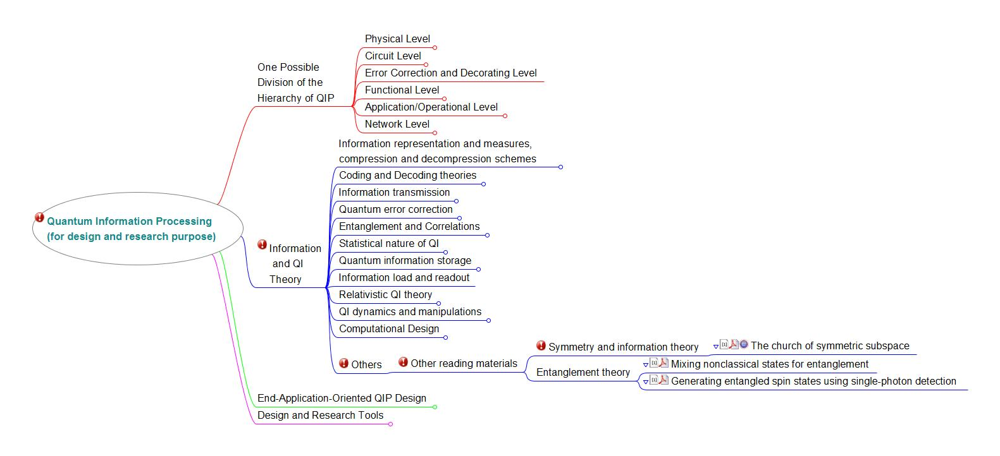

Roadmaps
To download and synchronize this roadmap, please check our roadmap open project page.
We have listed some media websites for you to observe the progress of ICIQ fields. A lot of breaking news are also shared and discussed in our ICIQ G+ Community posts. Welcome your opinions to be shared in our community after observing.
Recorded Workshops and Conferences
Here we collect some recent lecture and workshop/conference videos on quantum information science:
Frontiers of Quantum Information Science (The 31st Jerusalem Winter School in Theoretical Physics).
Quantum Hamiltonian Complexity Boot Camp
Isaac Newton Institute for Mathematical Sciences also have talks and tutorials from their workshops recorded, which might be of interest to you.
More conference and workshop information on Quantum Information Science can be found here.
You are highly welcome to share more useful online videos/information of talks which may help the community outline the roadmap of our future. Thanks for your contributions!